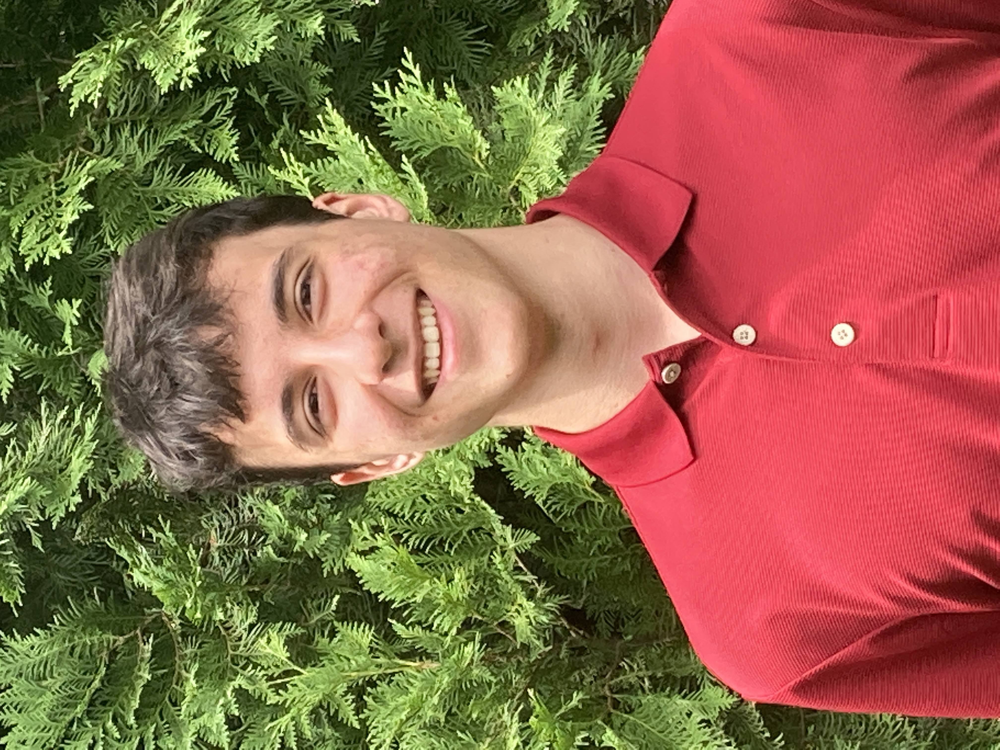
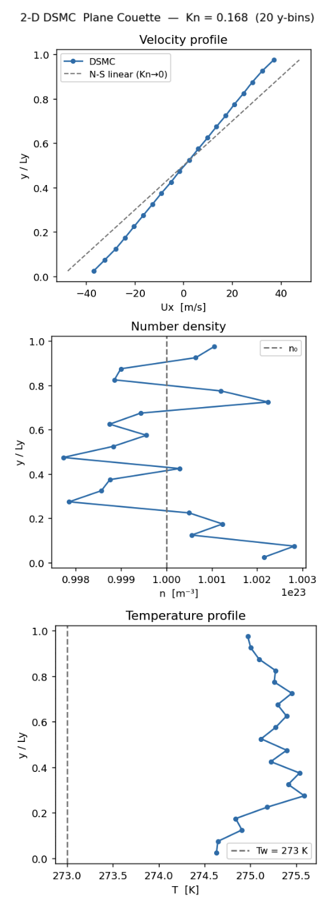
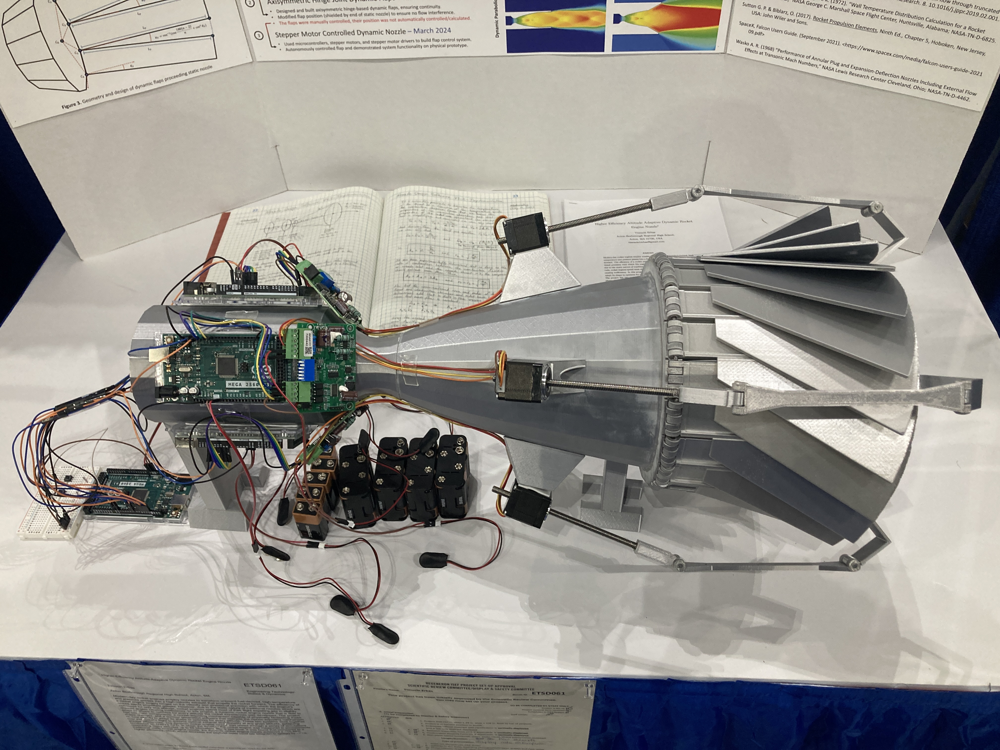
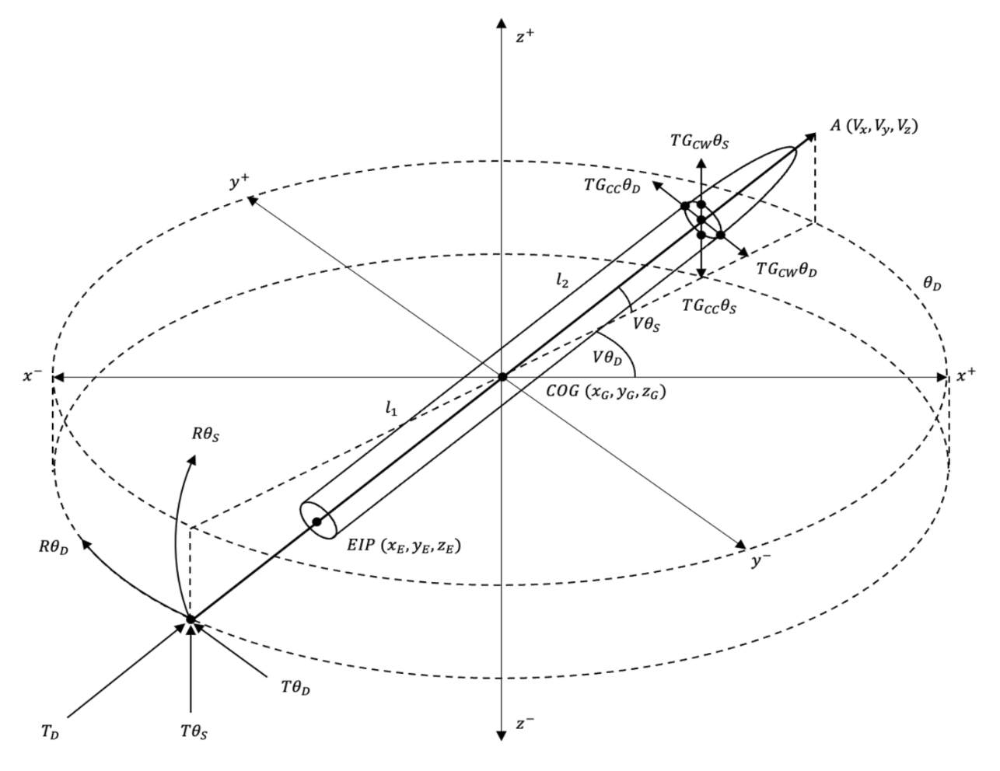

Timucin Erbas.
Rising junior at Boston University, dual degree in physics and computer engineering. Currently working on transformer architectures — sparse attention for long-context efficiency, and recurrent-depth transformers that let a model reason longer at test time without growing in size.
Previously: research on geometry-grounded transformers, a 30 kN rocket engine built from scratch, and computer-vision-informed guidance and control software. Three issued and pending patents on rocket-engine hardware. Masayoshi Son Foundation Fellow, Z Fellow.
Research.
I work on two lines of transformer research at once. The first is architectural efficiency — sparse attention that cuts the compute a transformer spends without giving up what it can do. The second is recurrent-depth transformers, which let a model reason longer at test time without making the model itself any bigger. I care about problems whose answers move the whole field, not incremental corners of it.
Selected work.
-
AI/MLML-Accelerated DSMC for Aerospace2026+

Trained a neural surrogate model on data generated by a from-scratch 2-D DSMC solver to replace its most expensive phase — the per-cell collision loop — cutting simulation runtime while preserving the underlying rarefied-flow physics.
First built a complete Direct Simulation Monte Carlo (DSMC) solver in Python/NumPy using Bird's No-Time-Counter (NTC) scheme on a hard-sphere argon gas, structured to mirror production codes like SPARTA and dsmcFoam across five phases: free-flight advection with diffuse-reflection walls, particle-to-cell indexing, NTC collision (candidate selection, acceptance–rejection, isotropic elastic scattering), and macroscopic moment sampling. Validated on plane Couette flow in the transition regime (Knudsen number ≈ 0.17), it reproduces rarefaction physics that continuum Navier–Stokes cannot — wall velocity slip, departure from the linear continuum profile, and viscous heating above wall temperature. Per-phase timing instrumentation isolated the collision loop as the dominant cost, so I used the solver to generate ground-truth training data and trained an AI model to emulate the collision step directly — learning the mapping from a cell's particle state to its post-collision velocity distribution. Dropped back into the simulation loop in place of the explicit NTC collision routine, the trained surrogate accelerates the simulation's dominant bottleneck phase while preserving the rarefied-flow physics of the baseline solver.
-
Aerospace30 kN Liquid Rocket Engine2025+

Led a four-person team to design and build a 30 kN sea-level LOX/kerosene liquid rocket engine test stand, personally owning the propellant pressurization, control, and feed systems — including a pressure-fed design that holds propellant pressure constant throughout a burn, avoiding the thrust decay typical of pressure-fed engines.
As project manager of a four-person team, directed the design of every major subsystem of a 30 kN sea-level LOX/kerosene engine — a ~200 kg ground-based test article — and was solely responsible for the oxidizer and fuel pressurization, control, and feed systems. The engine runs at 10 bar chamber pressure through a team-designed impinging injector, with a Rao-contour nozzle I designed and had CNC-machined, and is built around a regenerative-style liquid-nitrogen cooling circuit. Its defining feature is the pressurization system: a pressure-fed architecture capable of variable propellant pressures up to 100 bar that, unlike typical fixed or blowdown pressure-fed systems, actively maintains constant propellant pressure across the entire burn — eliminating the thrust decay long pressure-fed runs normally suffer. Design was backed by CFD, combustion and thermal modelling, structural FEA, and hand calculations in ANSYS, fabricated primarily from steel with aluminium on non-load-bearing parts. A full cold-flow test validated mass flow, feed-system behaviour, and pressures across the engine via thermocouples and pressure transducers, supporting the 30 kN calculated thrust figure. The build was deliberately iterative: a first-revision pressurizer that bottlenecked at its regulators was resolved by running many in parallel to break the flow limit, and an early injector that leaked through its layered manufacturing seams was reworked with revised sealing. The same engine is operated remotely through the Ethernet control project detailed below.
-
EmbeddedEthernet Control, 30 kN Engine2025+
Built the real-time Ethernet control network that operated the 30 kN engine end-to-end during its cold-flow test — a single control computer commanding 10 actuators and reading 20 sensors over UDP at sub-5 ms latency.
Architected and built the full control network for the 30 kN engine: a LAN of four interconnected Ethernet switches linking one control computer to 30 STM32-based edge devices across the test stand. I designed all of the networking hardware and wrote the custom UDP packet layer that issues commands and streams telemetry, driving 10 actuators while simultaneously reading 20 sensors in real time at under 5 ms latency (a teammate built the data-display software on top of the packet code I wrote). The hardest problem was intermittent connectivity — endpoints kept dropping off the LAN and packets failed to route as device IP addresses shifted unpredictably. I traced it by probing power and communication lines across the edge circuits, dumping and reading the STM32 register values on the affected boards, and running extensive ping tests, which revealed the root cause: the STM32s were browning out whenever their actuators switched on or off, as the high inrush current through the shared endpoint circuit collapsed each board's supply voltage and reset its network stack. I solved it by moving the edge devices to power-over-Ethernet and adding an LC denoising circuit to isolate the boards from actuator switching transients. The system ran the engine end-to-end through its full cold-flow test, fully validated.
-
AerospaceDynamic Rocket Engine Nozzle2024+

Designed an altitude-adaptive rocket nozzle that reshapes itself in flight to stay optimally expanded at every altitude, achieving 10.88% higher efficiency than the static parabolic nozzle class used on SpaceX's Merlin engine in ANSYS CFD — a gain that would cut cost-per-kilogram to orbit by roughly 12%.
Modern rocket nozzles have a fixed shape optimized for a single altitude, so they bleed efficiency to over- and under-expansion everywhere else along a flight. This project develops a nozzle that continuously reshapes itself to stay optimally expanded at every altitude, built from two coupled systems. The physical mechanism is a ring of interlocking flaps driven by coordinated stepper motors, joined with axisymmetric hinges and circular-sector extensions so the nozzle expands while staying gap-free and continuous — preventing exhaust leakage and flow separation. The contour-generation software computes the optimal flap angle in real time: using isentropic flow relations and ideal-gas assumptions, it derives the critical radii and a continuous, differentiable parabolic contour for both a sea-level-optimized nozzle and an altitude-optimized nozzle, then sets the flap angle that morphs one into the other. Validated in ANSYS CFD across 29 altitudes up to 66 km — with boundary conditions regressed from real SpaceX Falcon 9 flight telemetry and thrust integrated over the exit plane by a Riemann-sum method — the dynamic parabolic nozzle outperformed the static parabolic baseline by 10.88%, equivalent to a ~12% reduction in cost per kilogram to orbit. The build surfaced and resolved real failure modes through iteration: external-hinge flaps that opened gaps were redesigned with axisymmetric joints, conical contours that produced exit shockwaves were replaced with parabolic ones, and unstable 2-D simulations were rebuilt as custom-fluid axisymmetric runs with ramped boundary conditions. A feasibility analysis showed the software solves in under 0.1 s on a single CPU and that standard nozzle materials survive the ~950 °C environment, making the system buildable with existing hardware. This work underlies pending rocket-nozzle patents.
-
EmbeddedSTM32 BMP388 Sensor Emulator2024+

Built a firmware-level BMP388 sensor emulator that feeds a flight computer synthetic altitude data over I²C, replicating the sensor's full register map, calibration coefficients, and data-ready interrupt so ground tests run with no real sensor or pressure chamber.
Acting as an I²C slave at the BMP388's own address (0x77), the microcontroller responds to the flight computer exactly as the real sensor would: it returns the genuine chip ID (0x50) so the driver accepts it as authentic, replies to the event, status, and interrupt registers with power-on and data-ready flags, and serves 24-bit pressure and temperature readings in the sensor's little-endian register layout. The core challenge is that the flight computer's BMP388 driver runs every raw reading through a multi-coefficient compensation formula using the sensor's NVM calibration constants. To inject an arbitrary target pressure or temperature, the firmware loads a chosen set of those calibration coefficients and then runs the compensation math in reverse — computing the exact raw register values that, after the driver's forward compensation, decode back to the desired physical reading (22.5 °C and 101,250 Pa in the reference configuration). A simulated data-ready interrupt is pulsed on a GPIO line every 10 ms to drive the flight computer's interrupt-driven read loop at a realistic cadence. Validated against a real external STM32-based flight computer, which read the emulated sensor as a genuine BMP388 with no driver modifications, the result is a fully synthetic, controllable altitude source that lets flight software be validated on the bench — replaying trajectories and edge cases — without a vacuum chamber, a real sensor, or an actual flight.
-
AerospaceModel Predictive Control for Lunar Landing2023+

Designed and implemented an MPC algorithm for autonomous rocket precision landing, achieving 100% landing success within 550 meters of trajectory correction in a custom Mars-like physics simulation. Presented work in the 2023 American Control Conference (ACC).
Built from scratch in Python, the algorithm controls a rocket's main engine gimbal, throttle, and cold gas thrusters simultaneously using a depth-first scenario tree search with a time horizon of 6 steps. At each time step, up to 65,536 actuation sequences are evaluated using a derived physics model accounting for 3D linear and angular dynamics, fuel burn, and gravity. Parallel processing reduced sequential computation to 128 scenarios, keeping solve time feasible. A three-stage dynamic cost function shifts variable prioritization by altitude to balance trajectory correction, orientation control, and soft touchdown. Validated across 58 simulations on a SpaceX Starship-like rocket in Mars gravity (3.7 m/s²), the algorithm achieved 100% success up to 550 meters of trajectory correction and requires flight computer hardware equivalent to ~20 Intel Xeon CPUs — well within feasibility for a real mission. Together with a CNN-based landing-site selector, it forms a complete autonomous GNC stack.
Recognition & record.
-
Patent · IssuedTurbopump Device for Rocket EnginesUS Patent 12,497,935. A regenerative-cooling-inspired rocket engine turbopump that requires significantly fewer parts to build than conventional turbopumps.2025
-
Award1st Place Worldwide — Robotics & Intelligent MachinesRegeneron International Science and Engineering Fair (ISEF). For a precision rocket-landing system pairing a CNN landing-site selector with a model-predictive-control guidance algorithm.2023
-
HonorMasayoshi Son Foundation FellowSelected by a committee including Shinya Yamanaka (2012 Nobel Laureate in Medicine), Makoto Gonokami (President of the University of Tokyo, 2015–2021), and Masayoshi Son (founder of SoftBank).2022
-
FellowshipZ FellowsSelected for work on systems that grow and train biological neural networks.2023
-
Fellowship1517 Medici FoundationBacked for the same work on growing and training biological neural networks.2023
-
Award3rd Place Worldwide — Engineering Technology: Statics & DynamicsRegeneron ISEF. For the altitude-adaptive dynamic rocket engine nozzle.2024
-
AwardTop 300 Scholar — Regeneron Science Talent SearchNational recognition (Regeneron STS) for the model-predictive-control precision rocket-landing work also presented at the 2023 American Control Conference.2024
-
Patent · PendingAltitude-Adaptive Dynamic Rocket NozzleUS Patent Application 63/637,475. An altitude-adaptive nozzle that reshapes itself in flight, reducing the cost of space transportation by ~12%.2025
-
Patent · PendingAblative Altitude-Adaptive Solid-Motor NozzleUS Provisional Application 63/964,983. A fixed-geometry solid-motor nozzle that uses controlled erosion of a thick engineered ablative liner to passively raise its expansion ratio during ascent — tracking ambient pressure and improving efficiency with no moving parts.2026
-
AwardOffice of Naval Research Special AwardRegeneron ISEF. $15,000 award from the ONR on behalf of the U.S. Navy and Marine Corps.2024
-
PresentationPresenter, American Control ConferenceAccepted to present "Precision Rocket Landing Model Predictive Control Algorithm" at the 2023 ACC poster session.2023
-
AwardSAE International Special AwardRegeneron ISEF. $2,000 award from SAE International for the precision rocket-landing project.2023